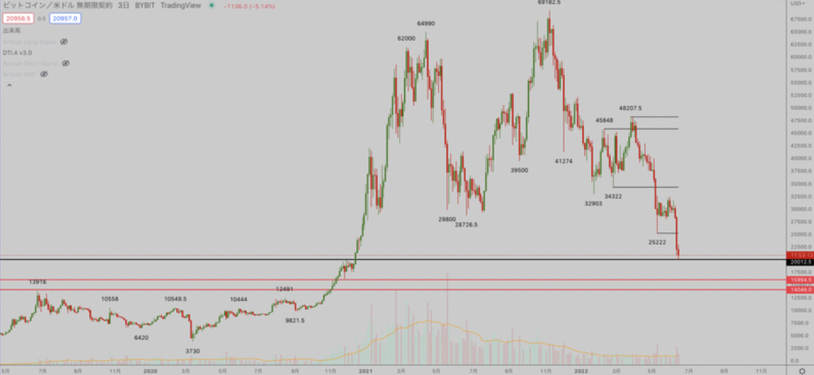
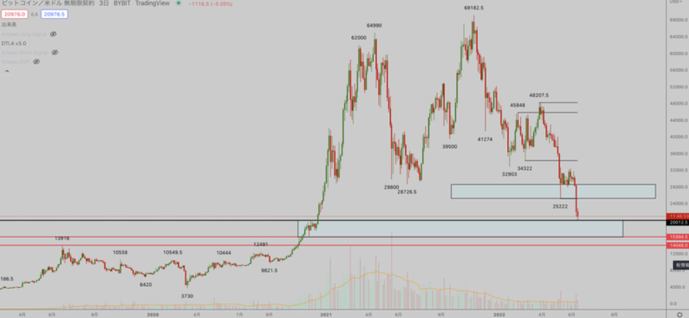
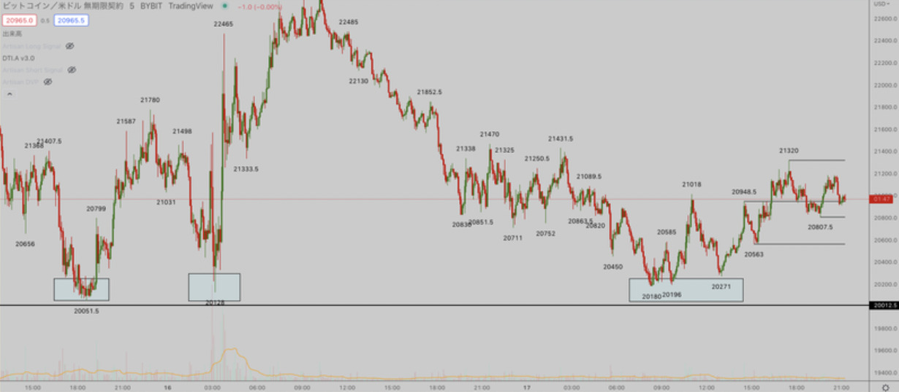
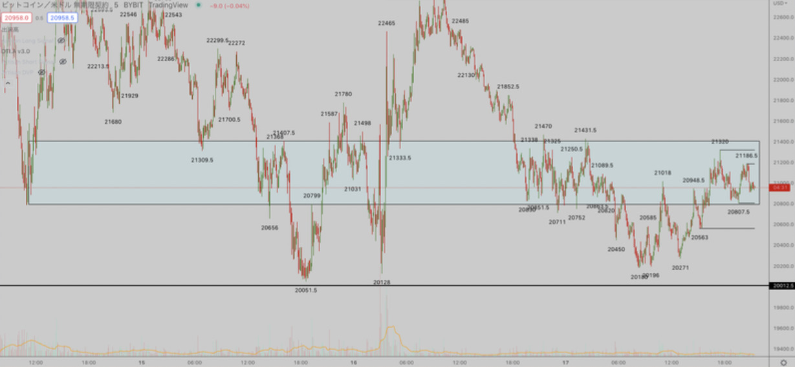
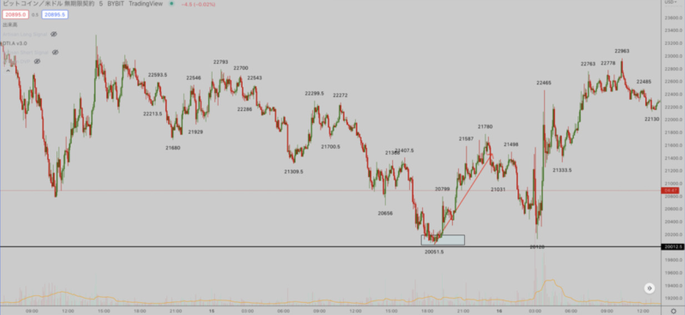
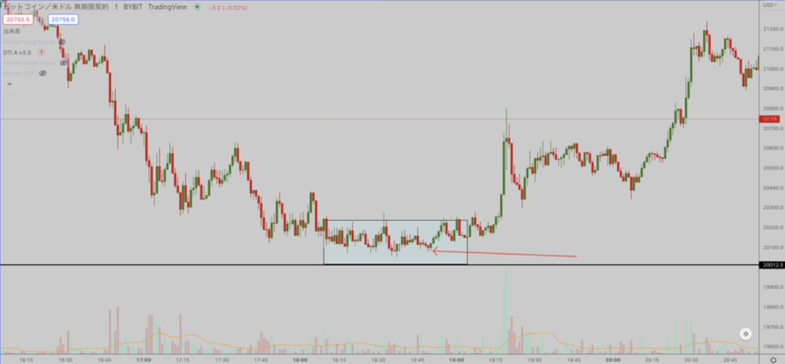
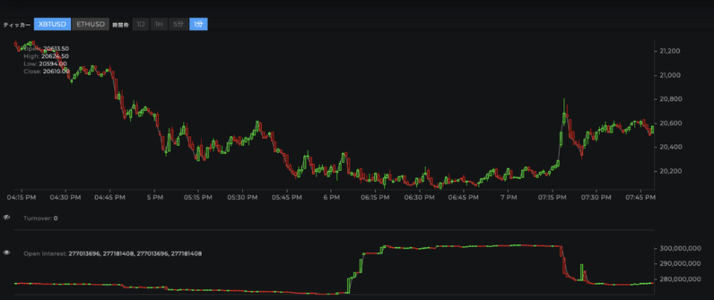

トレード記録

ビットコイン
ビットコイン３日足チャート

5月から組んでいたレンジをやっとブレイクし明確に下降トレンドが出ましたね。自分は先に35000ドル付近を先に試すと思っていたので全然ショートは取れませんでした。もっと大きなディセトラを作ると思っていたので。
そんなことはどうでも良くて、気になっているのは今後の展望だと思うんですが、まずレジサポの位置から解説していきます。
ビットコイン３日足チャート

上が直近のレジスタンス、下が前回バブルの高値付近です。毎回バブル後は前回バブルの高値を試すのは恒例行事なので、ああやっときたか。という感じです。
自分はまだ中期は売り目線なんですが、直近で注意しておかないといけないのは20000ドルのサポートライン。
割と簡単ですね。誰でもわかるレベル。
レジサポの位置と同じくらいに自分が大事にしているのは以下です。
今回のバブル崩壊からのちゃんとしたトレンド転換が来るのであれば、コロナショック的な反転ではなく、2018年のバブル崩壊反転型だと思っています。つまり少なくとも半年〜1年以上は低迷期が続くと思っているので自分は1万ドル以上の値幅を狙っていくスイングロングを取る予定は今の所ありません。
ビットコイン５分足チャート

20000〜20300ドル付近の買い支え方に違和感を感じるんですよね。
割れるなら6/15、6/16の時点で破壊出来てたと思うんですよね、なので直近のトレードで一番気を付けないといけないのはツッコミショートだと思っています。どちらかというとショートカバーを狙いたい来週です。
ざっくり説明するとレンジブレイクして上がったら売りたいけど下がってきたら触らないor少しだけ買ってみるという意識で立ち回っています。
個人的に短期的には21500以下でショートするリスクを取りたくなく、20700以上で買いたくないという感じです。
図解するとこんな感じ↓・ビットコイン５分足チャート

一言で言えばこのゾーン触る価値ねえ。です。
ここから今週のトレードのおさらいとか根拠とかを話していきますね。
まず自分は今週、ドル円を触りすぎてほとんどビットコインを見ていないので、１ポジしか取ってません。（ツイートあったら教えてください、忘れているだけなので）
スペースでも話したんで、知っている人も多いと思いますがこの辺り。↓・ビットコイン５分足チャート

20000ドル割れない反転からの1300ドルくらいですね。10枚しか買ってないので100万ちょいしか儲かりませんでしたけど。
で、気になるのは根拠だと思うんですけど、状況的に自分はめちゃくちゃ割ると思って張り付いてチャートをチャートを見てました。なんなら割ると思ってスペースしてましたw
当初の予定としては20000ドルを割って清算が走り、その鬼リバをロングで取っていく。だったんですが1時間経っても割れないんですよね、めっちゃイライラしました。
ビットコイン１分足

赤い矢印の部分で、あ、これ割れないんじゃね？と思いました。
相場長い人とかローソク足の本読み込んで実践している人は分かりやすいと思うんですけど、20000ドル付近の守り方は異常でした。絶対短期足下ヒゲにするマンと陽線にするマンが居たと思います。
37500ドル？付近みたいな動きですね。
自分は割って欲しかったんですが、短期ショートツッコミまくり＋ fr次回大幅マイナスだったと思います。
oiチャート

ツッコミショートが溜まった後一気に清算されてその後ショートカバーが発生しているのが分かると思います。
これの見方について自分は詳しい訳ではないですし、あくまで自分なりの解釈でしかないので間違っていたらすみません。マジで大して見てないので。
でまあ自分の場合この位置からロングを取る場合立ち回り的には、20000ドル割れで損切り→清算後の激リバを狙うなんですが、その時の現在価格が20100ドルとかだったんですよね。
普段スイングなので1000ドル幅2000ドル幅許容して積んでいくみたいな立ち回りをしている勢からしたら手数料込みで200ドル幅の損切りなんか余裕です。
むしろここで綺麗に反転してくれると仮定するなら、1000ドル幅はリバると思っていたので、リスクが安すぎるくらいの環境でした。
自分の中で自信があればロットは張るんですが、そこまで自信がなかったので比率としては根拠よりもリスクが少ない状態だったのでエントリーした形になります。
普段100ドル幅損切り痛えと思ってる人はロット張りすぎなので調節してくださいね。